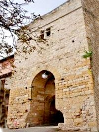
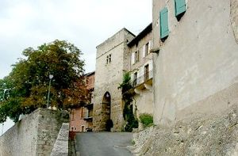
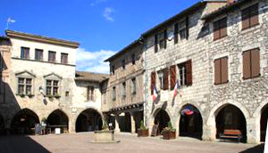
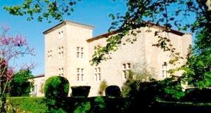
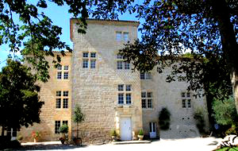
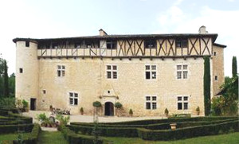
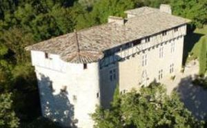
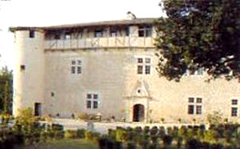

Recensement Jean-Claude Truffet
| Département | 81 — Tarn |
| Canton | Rabastens |
| Commune | Castelnau de Montmiral |
| Type d'édifice | Bastide |
| Période d'origine | XIII-XVI |








A Castelnau de Montmiral ; le château de Corduriès du XVI-XVIIe siècle , de Meyrargues du XVI-XVIIe siècles et la Bastide. La BASTIDE albigeoise est fondée en 1222 par Raymond VII, comte de Toulouse. Son nom primitif est "Castellum Novum Montis Mirabilis" ; le diminutif de "Montmiral" a été communément utilisé dans les actes officiels, y compris au XIXe siècle dans l'état civil de la commune.
Pendant la Guerre de Cent Ans, les Anglais, conduits par le prince Noir, envahissent l'Albigeois en 1345. Ceux-ci se retireront sans oser attaquer la ville. Pendant les Guerres de religion, Castelnau-de-Montmiral n'adhère jamais au protestantisme et accueille les catholiques de Gaillac, qui ont été chassés de la ville par les protestants majoritaires. En janvier 1587, une attaque du capitaine protestant Bruniquel est repoussée. Selon la légende, une femme revenant de puiser l'eau à la fontaine du Théron aurait donné l'alerte, contraignant les assaillants à une retraite précipitée. Louis XIII est passé à Castelnau de Montmiral le 24 juin 1622, logé dans la maison de "Tonnac". C'est également le lieu d'habitation de la célèbre famille Privat. CORDURIES, pas d'information historique. MEYRARGUES, en 1453 fief des seigneurs d'Albiers, puis passa au XVIe siècle à la famille de Tonnac-Villeneuve qui le conservera jusqu'au XX e siècle, transformé en ferme puis longtemps abandonné devient en 1980 à la famille de Geddes qui le restaure.
Castelnau de Montmirail est une cité médiévale dominant fièrement la vallée du Tarn, justifie cette impression de forteresse imprenable. Le charme typique des façades, sa place aux arcades et son pilori témoignent dune histoire et dun patrimoine encore très présents. Corduriès, présente de nos jours un aspect à la fois bien entretenu et resté apparemment inchangé, avec ses dispositions des XVIe et XVIIe siècles. L'on découvre un logis à deux étages en avant duquel s'inscrit décentrée vers la gauche une grosse tour d'escalier carrée. Malgré des traces de reprise, le château présente un appareil homogène et les angles du bâtiment ont reçu de beaux chaînages. Les croisées de meneaux, simples, présentent toutes la même physionomie et la principale animation de cette façade réside dans la porte s'ouvrant à droite de la tour. Coiffée d'un fronton curviligne, cette porte a reçu un décor de pilastres ioniques dont l'originalité ne traduit plus celui de la Renaissance, mais l'art maniériste. La verticalité des pilastres se trouve interrompue par un coupage en bossages entre lesquels viennent s'insérer des entrelacs. Par son aspect à la fois massif et aimable, ce château est tout à fait représentatif des manoirs de la région édifiés ou le plus souvent remaniés à l'aube du grand siècle. Mayrargues demeure fortifiée de la renaissance en pierre corps de logis rectangulaire, élevé sur un rez-de-chaussée et de deux étages, le second sur encorbellement comporte une partie ajoutée formant chemin de ronde et une partie pleine appareillée en torchis avec pans de bois. A l'est une tour pentagonale engagée et à l'angle sud-ouest une tour ronde arasée. A l'angle nord s'élevait une échauguette équipée d'une meurtrière. La façade sur cour est éclairée par sept croisées, décentrée la porte d'entrée tranche par sa décoration raffinée elle s'encadre entre des piédroits terminées par des pilastres à chapiteaux ioniques soutenant une corniches laquelle est surmonté d'un fronton triangulaire percé d'un il-de-buf ovale.
Famille Privat Famille de Tonnac-Villeneuve
"
La bastide de Castelnau avec porte, le château de Conduries et le château de Meyrargues.